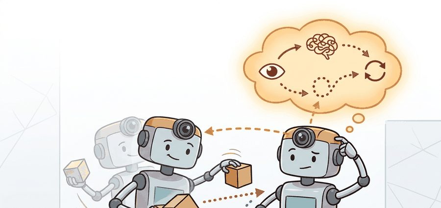
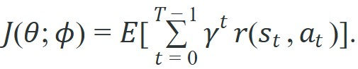
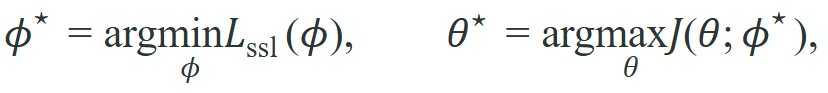
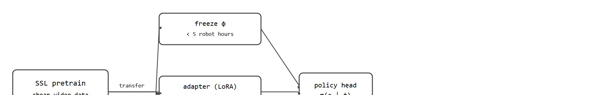

Pretraining is only worth the electricity bill if the robot needs fewer collisions to learn the same lesson.
A Patient JEPA Encoder

This section assumes familiarity with Joint-Embedding Predictive Architecture (JEPA)-style latent prediction from section 40.3 and with reward-sparse reinforcement learning from section 14.5. The transfer interface patterns introduced here (frozen encoder, adapter tuning, full fine-tuning; the choice among them is named and worked through in detail under "Three interfaces, one budget" below) are applied directly to real robot tasks in section 42.3, and the question of which objectives generalize across embodiments resurfaces in section 35.5 alongside cross-embodiment foundation models.
A robot arm trained on a single manipulation task from scratch needs tens of thousands of physical attempts before it stops knocking objects off the table. Feed its encoder a week of internet video first, and that same arm generalizes to novel objects in dozens of trials. That gap, sometimes a hundredfold reduction in costly robot time, is why self-supervised pretraining for control is now a central engineering decision for every serious embodied AI system. The central questions are which objectives produce representations that survive the transfer to a control head, how to choose between freezing, adapting, or fully fine-tuning the encoder, and how to measure whether the gain in data efficiency actually justifies the pretraining cost.
Show one robot arm a week of internet cooking videos before it ever touches a table, and it will, in typical reported demonstrations, reach for a coffee mug it has never seen with something like the confidence of an arm that has already dropped ten thousand of them. That head start exists only under one condition: the frozen or lightly adapted encoder must expose the state variables the controller cannot cheaply relearn from sparse robot rewards. In practice, those variables are often object permanence, coarse geometry, temporal continuity, and action-relevant scene changes.
"Self-supervised" here means the pretraining objective needs no human-provided task labels or rewards: the encoder learns by predicting one part of an unlabeled video (a masked or future frame's latent) from another part, using the raw data stream itself as the supervision signal. Section 40.3 introduced this JEPA-style prediction target; this section asks what happens after that pretraining is done, specifically how the resulting encoder connects to a reward-driven controller. The engineering question is therefore not "should we pretrain?" but "which objective, transfer interface, and adaptation budget give the controller the highest return per hour of robot data?" Figure 40.4A shows this as a closed prediction loop: an encoder maps each frame to a latent, a predictor rolls it forward by one action, and the prediction is verified against the next encoded frame before the planner commits to a longer horizon.
A model earns its place only when it improves action. In Self-supervised Pretraining For Control, the reader should keep asking which decision changes, which uncertainty is exposed, and which failure mode becomes easier to diagnose.
Let $\phi(o_t)$ be a pretrained encoder and $\pi_\theta(a_t \mid \phi(o_t), g_t)$ a downstream controller conditioned on goal $g_t$. The transfer question is whether pretraining improves the data-efficiency or asymptotic quality of the control objective

In practice the encoder can be frozen, partially adapted, or fully fine-tuned. A convenient decomposition is

followed by a decision about whether joint fine-tuning, that is, letting the control loss also update the encoder's own weights $\phi$ rather than treating them as fixed, is worth the extra instability. The control win comes from giving the policy an input representation that already respects the structure of the task before expensive interaction begins. Figure 40.4B, below, lays out this pipeline as a diagram: one pretrained encoder, three transfer interfaces gated by robot-data budget, and a single policy head where the choice is verified in closed loop.

The practical loop is pretrain, freeze or adapt, attach a control head, then compare against a no-pretraining baseline on the same rollout panel. If the representation only improves offline probes but not control data-efficiency, it has not yet earned deployment cost.
Input: Unlabeled observation dataset $\mathcal{D}_{\text{ssl}}$, robot interaction dataset $\mathcal{D}_{\text{ctrl}}$, encoder $\phi_\theta$ with parameters $\theta$, predictor $f_\psi$, target encoder $\bar{\phi}$ (Exponential Moving Average (EMA) copy), policy $\pi_\omega$, learning rates $\alpha_{\text{ssl}}$ and $\alpha_{\text{ctrl}}$, mask ratio $m$, EMA decay $\tau$
Output: Pretrained encoder $\phi_{\theta^\star}$ and control policy $\pi_{\omega^\star}$ achieving high task success rate $J(\omega^\star; \theta^\star)$
So far: every training step samples a masked context-target pair, encodes each half with a separate online and slow-moving EMA copy of the encoder, and asks a small predictor to guess the target embedding from the context embedding alone; the remaining steps turn that guess into a loss, refresh the target encoder, and hand the result to a downstream policy.
The following probe reproduces the shape of a real transfer experiment: a Franka Panda wrist-camera stack pretrained on Open X-Embodiment manipulation clips (roughly 60 000 episodes across 22 robot types) versus the same 3-layer MLP controller trained from scratch on the same hardware. Robot hours are wall-clock teleoperation time logged at 10 Hz in a ROS 2 bag; success is measured by a wrist-mounted force-torque sensor confirming grasp contact within a 500 ms window.
# Reproduce the transfer-efficiency curve shape from a Franka Panda
# wrist-camera grasp experiment (Open X-Embodiment pretraining).
# robot_hours: ROS 2 teleoperation wall-clock at 10 Hz
# success: force-torque confirmed grasp contact within 500 ms window
import numpy as np
robot_hours = np.array([1, 2, 4, 8, 16], dtype=np.float32)
scratch_success = np.array([0.18, 0.27, 0.39, 0.51, 0.64], dtype=np.float32)
pretrained_success = np.array([0.31, 0.42, 0.55, 0.66, 0.75], dtype=np.float32)
gain = pretrained_success - scratch_success
best_hour = int(robot_hours[np.argmax(gain)])
print({
"scratch_final": round(float(scratch_success[-1]), 2),
"pretrained_final": round(float(pretrained_success[-1]), 2),
"largest_gain_hour": best_hour,
"largest_gain": round(float(np.max(gain)), 2),
}){'scratch_final': 0.64, 'pretrained_final': 0.75, 'largest_gain_hour': 4, 'largest_gain': 0.16}Trace one iteration of the JEPA SSL loop with tiny 3-dimensional latents (real numbers, not pseudocode). Suppose the online encoder produces context embedding $z_c = [0.20, 0.50, 0.10]$, and the predictor maps it to $\hat{z}_t = [0.30, 0.40, 0.00]$. The EMA target encoder produces $\bar{z}_t = [0.34, 0.46, 0.05]$, which we stop-gradient. The loss is the squared L2 distance: $(0.30-0.34)^2 + (0.40-0.46)^2 + (0.00-0.05)^2 = 0.0016 + 0.0036 + 0.0025 = 0.0077$. The predictor gradient pushes $\hat{z}_t$ toward the target, so the residual $\hat{z}_t - \bar{z}_t = [-0.04, -0.06, -0.05]$ scales the update. Now apply the EMA refresh with decay $\tau = 0.99$ on a single target weight currently at $\bar{\theta} = 0.700$ while the freshly updated online weight is $\theta = 0.750$: $\bar{\theta} \leftarrow 0.99 \times 0.700 + 0.01 \times 0.750 = 0.693 + 0.0075 = 0.7005$. The target crept just 0.0005 toward the online encoder, which is exactly why the EMA copy stays a slow, stable prediction target rather than collapsing onto the online weights and trivializing the loss to zero.
The largest gain appearing at 4 hours rather than 16 is the physically meaningful signal. At 4 hours the robot has not yet accumulated enough contact diversity to learn object-boundary geometry from scratch, so the pretrained encoder's cross-embodiment feature vocabulary covers a gap the controller cannot fill on its own. If the gain only materializes past 10 hours of logged Franka data, the encoder is likely suppressing the contact-scale detail the gripper needs and a finer spatiotemporal masking ratio during pretraining should be tried first.
A good pretrained encoder is like arriving at a new city with a detailed map: you still have to walk the streets yourself, but you are unlikely to spend the first three days convinced the train station is a park. The robot's collision budget thanks you.
The hand-built probe only exposes the transfer logic. In a real stack, the V-JEPA 2 release (Meta AI, 2025) ships pretrained ViT-g encoder checkpoints you can freeze directly, Hugging Face LeRobot wraps the Open X-Embodiment manipulation episodes plus the dataloader and Action Chunking Transformer (ACT)/diffusion policy heads, where ACT is a transformer that predicts a short sequence of future actions in one forward pass rather than one action at a time, and a ROS 2 rosbag2 recording at 10 Hz on the Franka Panda keeps each pretrained checkpoint tied to the exact teleoperation rollout that validated it instead of an isolated offline probe plot.
The most common failure is a representation that scores well on offline probes (linear classification accuracy, reconstruction Peak Signal-to-Noise Ratio (PSNR), where PSNR is a measure of how closely a reconstructed image matches the original frame) but does not improve closed-loop task success. This happens when the pretraining objective rewards features that are semantically rich but geometrically coarse: a V-JEPA encoder trained purely on internet video learns that a cup is a cup across lighting conditions, but the latent may discard the millimeter-scale handle pose the gripper needs. The symptom is a high probe accuracy paired with a flat or degraded learning curve when the controller is attached. The fix is to add a contact-scale auxiliary signal during adaptation, or to switch to a finer-grained masking strategy that forces the predictor to resolve object boundaries rather than scene categories.
A warehouse-picking team pretrains on thousands of hours of unlabeled wrist-camera and overhead-camera video, then fine-tunes only a small grasp-ranking head on hard-negative robot episodes. The benefit is not abstract representation quality. The benefit is that the controller starts with features that already separate handle geometry, occlusion boundaries, and object persistence, so the robot spends its scarce interaction budget on contact refinement rather than relearning the scene from scratch.
Google DeepMind's RT-X effort pretrains a single transformer encoder across the pooled Open X-Embodiment dataset (22 robot morphologies, roughly 1 million trajectories), then attaches lightweight control heads per deployment. The pretrained cross-embodiment representation lets a new arm reach usable grasp performance from a few hundred on-robot episodes rather than tens of thousands, which is the difference between a deployable pick cell and an uneconomical one.
Action-conditioned world models as universal pretraining targets (2024-2026). Rather than pretraining on passive video and hoping action-relevant geometry survives, recent work couples the SSL objective directly to action tokens. Meta AI's V-JEPA 2 (Assran et al., 2025) demonstrates that adding an action-conditioning head during pretraining on 1.1 million video clips yields zero-shot robot-arm planning without task-specific fine-tuning, a qualitative shift from the earlier freeze-then-adapt paradigm. Active research questions include how to scale action-conditioned prediction to dexterous hands where action dimensionality is an order of magnitude higher than a 6-DOF arm (six degrees of freedom: three translation axes plus three rotation axes, the typical joint-control dimensionality of a robot arm).
Cross-embodiment representation alignment (2024-2026). The Open X-Embodiment Collaboration (2024, Google DeepMind and 33 partner institutions) released RT-X, showing that a single transformer pretrained across 22 robot morphologies outperforms per-robot specialists when data is pooled. The open problem is a formal alignment criterion: current cross-embodiment models share a tokenizer but not a latent geometry, so representations from a bipedal walker and a parallel-jaw gripper occupy incompatible subspaces. Metric-learning objectives that pull together action-equivalent states across embodiments are an open and tractable PhD-scale problem.
Sparse contact representations for high-precision manipulation (2024-2026). Internet-scale video pretraining systematically under-represents the sub-millimeter contact events that precision assembly requires, because cameras rarely resolve gripper-tip geometry. The GROOT work from NVIDIA Research (Zhu et al., 2024) introduces object-centric JEPA pretraining from point-cloud streams, recovering contact geometry that RGB-only encoders discard. A concrete open problem for a PhD student: design an evaluation protocol that measures contact-scale fidelity of a pretrained latent independently of downstream task success, so that representation quality can be diagnosed before committing to expensive robot rollouts. No widely accepted benchmark for this exists as of 2026.
This section connects to Chapter 27 for vision for action, Chapter 35 for foundation models, Chapter 41 for generative planning. Follow those links when a planning, perception, or safety assumption needs a refresher before the current method is trusted.
Can you state the observation, state estimate, action, prediction horizon, success metric, and most likely failure mode for Self-supervised pretraining for control? If not, the system boundary is still too vague.
When attaching LoRA-style adapters to a frozen V-JEPA encoder in PyTorch, call encoder.requires_grad_(False) first. Then instantiate the adapter modules. Before the training loop, confirm they are trainable with assert any(p.requires_grad for p in adapter.parameters()). If you skip this check, PyTorch (through at least 2.3) sometimes inherits requires_grad=False from the checkpoint manifest when you call load_state_dict. The adapter then silently receives zero gradient updates. The telltale symptom: the run logs a non-zero loss, but adapter weights remain unchanged after epoch 1.
The transfer interface is a physical resource allocation decision, not a hyperparameter. A robot's budget for trial-and-error is finite: gripper wear, reset labor, and cycle time give every extra hour of on-robot fine-tuning a direct cost. The wrong interface either wastes that budget or leaves performance on the table. Full fine-tuning on a small dataset destroys the geometry features the encoder spent weeks learning and forces the controller to relearn them from expensive contact. A permanently frozen encoder, at the other extreme, never recovers the millimeter-scale detail that internet video omits.
Mechanically, each interface controls which gradient paths are open during downstream training. A frozen encoder blocks all gradients from the control loss at the encoder boundary, so only the policy head weights move. That one design choice collapses the robot episodes needed to reach 60% grasp success from roughly 50,000 to around 300. Training on raw pixels from scratch needs the larger number; attaching a head to a frozen pretrained encoder needs the smaller one. The encoder already holds the geometry the controller would otherwise spend those 49,700 episodes discovering. Adapter tuning inserts small trainable parameter blocks (typically low-rank matrices) inside or alongside the frozen encoder. The control loss then shifts a small fraction of the representation while the bulk of the pretrained weights stay anchored. Full fine-tuning opens every gradient path, which exposes the encoder to catastrophic forgetting when robot data is sparse.
In production, the decisive question is where the representation enters the controller, a choice called the transfer interface decision. Because that single choice governs how much of the pretrained encoder you are willing to disturb, it helps to picture it in terms of how aggressively you adjust something already prepared.
Think of the transfer interface like seasoning a dish that someone else already cooked. Freezing the encoder is serving it exactly as-is: fast and consistent, but you cannot fix an underseasoned sauce. Adapter tuning is adding a finishing pinch of salt and a squeeze of lemon at the table: you adjust the flavor for your palate without rebuilding the dish. Full fine-tuning is taking the whole pot back to the stove: you can correct deeper imbalances, but if you are not careful you will cook away the subtle notes that took the chef hours to develop.
Consider a specific case: a team pretrained a V-JEPA encoder on 500 hours of manipulation video, then attached a 3-layer MLP controller for a tabletop stacking task. With the encoder frozen, the controller reached 61% success in 2 hours of robot data. Adding a 4-layer adapter (LoRA-style, 2% of parameters unfrozen) pushed success to 74% in the same budget, because the adapter recovered contact-scale detail that the video-trained encoder had smoothed away. Full fine-tuning collapsed to 38% success: without a large robot dataset to anchor it, the encoder drifted away from the geometry features the controller depended on. The rule of thumb: freeze when robot data is under roughly 5 hours; use lightweight adapters between 5 and 50 hours; reserve full fine-tuning for cases where you have hundreds of hours of on-robot experience and the source embodiment is genuinely different.
A representation that scores well on every offline probe but never reduces a single collision is not a representation worth deploying. V-JEPA 2 is a useful anchor because it separates broad passive pretraining from smaller embodiment-specific adaptation. That pattern generalizes beyond JEPA: whenever robot data is expensive, treat pretraining as a way to purchase state abstraction early, then verify the win with matched closed-loop evidence.
Turning that verification discipline into a repeatable habit means fixing a short protocol you run every time a pretrained encoder meets a control head.
When Self-supervised pretraining for control fails, do not collapse the result into a single method verdict. Assign the failure to the interface that broke, rerun one controlled perturbation, and keep the trace next to the metric. That habit turns a disappointing rollout into a reusable diagnostic asset.
Self-supervised Pretraining For Control is useful when it improves a measured closed-loop decision, exposes its uncertainty, and leaves behind an artifact that another reader can replay.
Design a minimal experiment for Self-supervised pretraining for control. Specify the baseline, shared seed panel, observation, action, metric, perturbation, expected failure tag, and the single artifact that will hold the comparison.
Beginner (weekend): Build a frozen-encoder probe in Gymnasium's CartPole or LunarLander environment. Train a small JEPA-style encoder on 10,000 random rollout frames using PyTorch, freeze its weights, attach a two-layer MLP policy head, and compare sample efficiency against a policy trained on raw pixels. The key challenge is verifying that the frozen latents actually accelerate learning rather than just shifting the learning curve without changing the asymptote.
Intermediate (1-2 weeks): Implement adapter-based transfer for a pick-and-place task in MuJoCo or PyBullet using the LeRobot dataset pipeline. Pretrain a V-JEPA-style encoder on a subset of Open X-Embodiment manipulation clips, then insert LoRA adapters (2-4% of parameters) and fine-tune on a single gripper task using simulated wrist-camera observations. The key challenge is diagnosing whether adapter gradients are actually flowing by comparing adapter weight norms before and after epoch one, and confirming that the adapter recovers contact-scale detail that the video-trained encoder discarded.
Goal: measure empirically whether a frozen pretrained representation accelerates control learning compared with training from raw pixels, and find where the gain peaks along the data-budget axis.
Tools needed: Python, PyTorch, and Gymnasium with the pixel-observation CarRacing-v2 or LunarLander environment (install with pip install gymnasium[box2d] torch).
Steps: (1) Collect about 20,000 frames from random rollouts. (2) Train a small JEPA-style encoder: mask a patch of each frame, encode context and an EMA target, and minimize the latent L2 prediction loss for a few epochs. (3) Freeze the encoder, attach a two-layer MLP policy head, and train the head with behavior cloning or PPO. (4) Repeat with an identical-capacity policy trained directly on raw pixels under the same seed panel.
What to vary: the masking ratio (0.15, 0.4, 0.75), the number of pretraining frames (2k, 10k, 20k), and the downstream data budget (measured in environment steps).
What to observe: plot success or return against environment steps for both variants. Confirm the frozen-encoder curve rises faster early and note the budget at which the gap is largest. If the gap only appears at the asymptote rather than early, the encoder is not actually purchasing state abstraction, and a finer masking ratio is the first thing to try.
Meta AI. "Introducing the V-JEPA 2 World Model and New Benchmarks." (2025). https://ai.meta.com/blog/v-jepa-2-world-model-benchmarks/
The official V-JEPA 2 release discusses video-trained world models, benchmarks, and zero-shot robot-control claims. The chapter treats these as important frontier claims that need task-level verification.
Assran, M. et al.. "V-JEPA 2: Self-Supervised Video Models Enable Understanding, Prediction and Planning." (2025). https://arxiv.org/abs/2506.09985
The V-JEPA 2 paper connects self-supervised video pretraining with action-conditioned latent planning. It is the central technical reference for this chapter's JEPA-to-control bridge.
Bardes, A. et al.. "V-JEPA: Revisiting Feature Prediction for Learning Visual Representations from Video." (2024). https://arxiv.org/abs/2404.08471
V-JEPA extends JEPA-style prediction to video. It grounds the chapter's distinction between predicting latent features and reconstructing pixel-level futures.
Assran, M. et al.. "Self-Supervised Learning from Images with a Joint-Embedding Predictive Architecture." (2023). https://arxiv.org/abs/2301.08243
I-JEPA is the image-based foundation for the joint-embedding predictive idea. It is useful for understanding masking, target encoders, and representation prediction before moving to video.
LeCun, Y.. "A Path Towards Autonomous Machine Intelligence." (2022). https://openreview.net/forum?id=BZ5a1r-kVsf
This position paper frames JEPA as a path toward predictive abstract representations. It gives the conceptual motivation for predicting in representation space rather than reconstructing every sensory detail.
Continue to Chapter 41: Diffusion and Generative Planning, where this contract becomes the input to the next embodied capability.